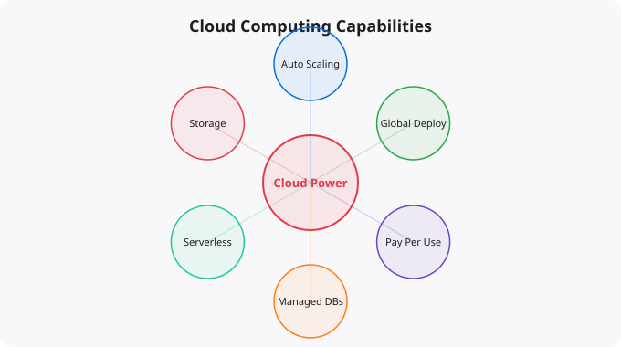

How to Use Cloud Power Effectively

Cloud computing has democratized access to infrastructure that was previously available only to large enterprises with massive capital budgets. A developer working alone can now spin up the same kind of server infrastructure that powers global applications, at a cost of a few dollars per hour or less. But access to powerful infrastructure does not automatically translate into well-built applications. Using cloud power effectively requires understanding both the capabilities and the principles that make cloud infrastructure work well.
Understanding the Core Cloud Value Proposition
The cloud's fundamental value proposition is not just that it is cheaper than owning hardware — sometimes it is not, especially at scale. The core value is elasticity, speed of provisioning, global reach, and managed services. Elasticity means you can scale resources up when you need them (high traffic, computational jobs) and scale them down when you do not (low traffic periods, completed jobs). With owned hardware, you provision for peak load and pay for all that capacity even when it is idle. With cloud, you pay roughly for what you actually use.
Speed of provisioning means you can have new servers, databases, or networks available in minutes rather than the weeks or months that physical hardware procurement required. This changes how teams work — infrastructure can be treated as code, spun up and torn down on demand, and experimented with cheaply. Global reach means you can deploy your application close to your users in any major region of the world, reducing latency and improving performance without maintaining physical presence in those regions.
The Infrastructure as Code Principle
One of the most important principles for using cloud effectively is infrastructure as code — treating your infrastructure configuration with the same rigor as application code. Instead of manually clicking through a web console to configure servers and networks, you define your infrastructure in code files (using tools like Terraform, AWS CloudFormation, or Google Cloud Deployment Manager) that can be version-controlled, reviewed, tested, and automated. Infrastructure as code provides several major benefits. It makes your infrastructure reproducible — you can create identical environments reliably, which is essential for development, staging, and production environments that behave consistently. It makes it auditable — you can see exactly what changed, when, and why, using standard code review and version control practices. And it enables automation — your CI/CD pipeline can automatically apply infrastructure changes when your code changes, keeping infrastructure in sync with application requirements.
Managed Services vs Self-Managed
One of the most consequential decisions in cloud architecture is when to use a managed service versus running something yourself. Cloud providers offer managed versions of many common technologies: managed databases (RDS, Cloud SQL), managed Kubernetes (EKS, GKE), managed message queues (SQS, Pub/Sub), managed caches (ElastiCache), and many others. Managed services handle the operational burden of the underlying technology — patching, backup, scaling, high availability configuration — in exchange for a cost premium over running the same technology yourself. For most teams, managed services are worth the premium because they dramatically reduce operational complexity. The engineering time not spent managing database patches or Kubernetes node maintenance can be spent on product features. The exceptions are cases where extreme customization is required, where the managed service has limitations that matter for your specific use case, or where the cost differential is large enough at scale to justify the operational investment.
Designing for Failure
One of the most important mindset shifts for cloud architecture is designing for failure rather than hoping for success. Individual cloud resources — servers, disks, network connections — do fail. The question is not whether they will fail, but whether your system is designed to handle those failures gracefully. Designing for failure means: running multiple instances behind a load balancer so that any single instance failure does not take down the service; using managed database services with automated failover so that a database node failure does not cause data loss or extended downtime; building retry logic into service-to-service communication; using health checks and automated replacement for failed instances; and storing application state in external, durable storage rather than on local instance disks that disappear when an instance terminates. These practices, which are standard in mature cloud architectures, are what enable systems to achieve the high availability percentages that production applications require.
Cost-Aware Architecture
Cloud billing can surprise you if you design infrastructure without thinking about cost. Some cloud resources that seem free or cheap in small quantities become expensive at scale — data transfer, API calls, storage I/O operations. Designing with cost awareness from the beginning — using appropriate instance types for workloads, avoiding unnecessary data transfer across regions or out to the internet, caching aggressively to reduce compute and database load, using spot/preemptible instances for non-critical workloads — is a legitimate engineering skill. Set up cost monitoring and alerts immediately. Tag your resources so you can attribute costs to specific services or teams. Review costs regularly and optimize the largest contributors first. The goal is not to minimize costs at the expense of reliability or developer productivity, but to avoid waste — paying for resources that are not providing value.
Security as a First Principle
Security in cloud environments starts with identity — controlling who can do what. Implement least-privilege access: every service, user, and role should have exactly the permissions needed for its function and nothing more. Use IAM roles for services rather than long-lived credentials. Enable MFA on all user accounts. Store secrets in a secrets management service rather than in application code or configuration files. Enable audit logging from day one. The cloud gives you powerful tools for monitoring and detecting security events — CloudTrail on AWS, Cloud Audit Logs on GCP, Azure Monitor. Use them. Configure alerts for suspicious activity. Review security configurations regularly as your infrastructure evolves.
Key takeaways
- Cloud's superpower isn't infinite scale — it's the ability to experiment cheaply. Spin up infrastructure, test ideas, tear it down, pay only for what ran.
- Don't lift-and-shift if you can avoid it. Re-architecting for cloud-native patterns (managed services, serverless, auto-scaling) is where the real wins are.
- Treat cloud bills like an engineering problem, not a finance problem. Engineers caused them; engineers can fix them.
- Multi-cloud is usually a mistake for small teams. Pick one, master it, then optionally diversify when there's a real business reason.
Disclaimer:
This article is written for educational and informational purposes only.
It does not provide financial, legal, investment, or professional advice.
Cloud services, pricing, security, and practices may vary by provider,
region, and use case. Always verify information from official
documentation before making decisions.
The Cloud Capabilities Most People Do Not Use
Most beginners use cloud as "someone else's server" -- they spin up an EC2 instance, SSH into it, and do everything the same way they would on a physical machine. This uses approximately 10% of what cloud actually enables. The capabilities that make cloud genuinely transformative compared to physical servers are the ones that require changing how you think about infrastructure.
Traditional server thinking:
- Fixed capacity (buy a server, it stays that size)
- Manual provisioning (person configures each server)
- Data center recovery (if DC fails, wait for restoration)
- Upfront capital cost (buy before you know if you need it)
Cloud-native thinking:
- Elastic capacity (Auto Scaling adds/removes servers automatically)
- Infrastructure as Code (Terraform provisions identically every time)
- Multi-region architecture (traffic shifts to another region automatically)
- Pay-per-use (scale to zero when not needed)
# Real cloud-native patterns:
Auto Scaling Group: 0 servers at night, 20 during day, adjusts in minutes
Serverless: Lambda runs only when requests come in, costs near zero at rest
Managed databases: RDS handles backups, patches, failover automatically
CDN: CloudFront caches content at 400+ global locations
Spot instances: same hardware, 70-90% discount for interruptible workloadsBuilding Cost-Effective Cloud Architecture
Cloud costs surprise many organisations because they start with the convenience of running everything on large instances and forget to optimise. The principles of cost-effective cloud: right-size instances (use the smallest that meets your needs, upgrade when needed), use reserved instances or savings plans for stable workloads (30-60% discount), use spot instances for fault-tolerant batch workloads (70-90% discount), enable auto-scaling to scale down during low-traffic periods, and use serverless (Lambda, Fargate) for variable workloads where you pay only for actual usage.
More Questions Answered
What is serverless and when should I use it?
Serverless means running code without managing servers. AWS Lambda, Google Cloud Functions, Azure Functions run your code when triggered (HTTP request, queue message, schedule) and scale automatically from zero to millions of executions. Use serverless for: event-driven processing, APIs with variable traffic, scheduled jobs, and data processing pipelines. Do not use for: long-running processes over 15 minutes, applications needing persistent state in memory.
How do I estimate cloud costs before deploying?
Use the AWS Pricing Calculator (calculator.aws). Estimate monthly costs based on expected instance hours, storage, and data transfer. Set AWS Budget alerts at 80% and 100% of your estimate. Use cost tags to track spending by project. Monitor with AWS Cost Explorer after deployment to see actual vs estimated costs.
What is the difference between horizontal and vertical scaling?
Vertical scaling (scale up) means making one server bigger -- more CPU, more RAM. Has a ceiling (largest instance type) and requires downtime to change. Horizontal scaling (scale out) means adding more servers -- your application runs on 2 or 20 servers instead of 1. Requires stateless application design. Cloud makes horizontal scaling easy with Auto Scaling Groups and load balancers.
Frequently Asked Questions
Is this topic relevant for Indian tech professionals?
Yes. India is one of the fastest-growing tech markets globally. These skills are in high demand across startups, MNCs, and product companies in Bangalore, Hyderabad, Pune, and Mumbai.
How do I stay updated on this topic?
Follow official documentation, tech blogs from practitioners, GitHub repositories, and communities like Dev.to, Hashnode, and Reddit. Avoid news that creates urgency without substance.
What resources does SRJahir Tech recommend?
Official documentation first. Then practical tutorials. Then build real projects. SRJahir Tech articles are written from real production experience — bookmark the series that matches your learning goal.
How long does it take to see results after learning?
Consistent daily practice for 3-6 months produces real, usable skills. The key is building projects, not just reading. Every article on SRJahir Tech includes practical examples you can implement today.
Is SRJahir Tech content free?
Yes. All articles on SRJahir Tech are completely free. No paywalls, no subscriptions. Quality technical education should be accessible to everyone, especially aspiring engineers in India.